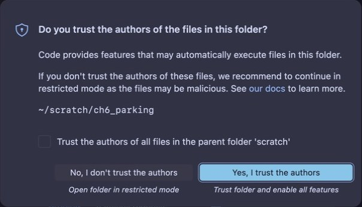

Before you start
So far every function you wrote lived in a notebook cell. Real Python programs are .py files, and their functions usually live in a different file from the main program. In this assignment you write programs that way, in VS Code.
You will learn
- how to put functions in a module (a
.pyfile of definitions) and use them frommain.pywithimport; - why test code in a module causes a problem when the module is imported;
- what the variable
__name__is, and howif __name__ == "__main__":fixes the problem.
Get ready
- Install Python and VS Code with the setup handout, and run its
hello.pycheck. Keephello.py: it is Task 1.
Setup handout (.docx) - Download and unzip the starter folder. It contains
ch6_parking,ch6_paint, andch6_grades, each with two files.
Starter folder (.zip) - Move
hello.pyinto thech6_takehomefolder. - Put
ch6_takehomein a folder whose path has no spaces, for exampleC:\INF120on Windows orINF120in your home folder on a Mac. On some computers the Run button fails when the path has a space (see Step 10). - Open a project folder with File > Open Folder. The first time, VS Code asks if you trust the authors of the files. They are your files: click Yes, I trust the authors.

A program in two files
Open the ch6_parking folder in VS Code (File > Open Folder). Type the code below into the two files. You wrote these parking functions on Day 1; now they live in their own file.
- Module:
parking.pyholds definitions: the functions. - Main program:
main.pyusesimport parking, then calls the functions asparking.parking_fee(hours), likeimport mathandmath.sqrt(16).
Click Run main.py and watch the yellow bar. At import parking it jumps into parking.py and runs that file from top to bottom. Each def only stores a function; the body runs later, when main.py calls it.
main.py in VS Code (open it, then click the Run Python File triangle in the top-right corner). The Terminal shows:
If you see ModuleNotFoundError: No module named 'parking', the two files are not in the same folder.Watch it in real VS Code (7 seconds)
The problem: tests in the module
While you write a module, you want to test its functions. Add the green lines to the bottom of parking.py.
First click Run parking.py: the tests run, which is what you want. Then click Run main.py: the tests run again, during import parking, before the program's own output. That's the problem: import runs every statement in the module that isn't inside a def.
main.py now prints the three test lines first, then the week's fees.Watch it in real VS Code (12 seconds)
The variable __name__
Python gives every file a built-in variable named __name__ (two underscores on each side). Its value depends on how the file runs:
| How the file runs | Value of __name__ |
|---|---|
| You run the file directly (Run Python File) | "__main__" |
Another file imports it (import parking) | the module's name: "parking" |
Run both files again and watch the yellow label on each file's tab: it shows the value of __name__ for the file that is running. When you run parking.py, it is "__main__". When main.py imports it, the same file runs with "parking".
The fix: if __name__ == "__main__":
Put the tests under an if that checks __name__. Indent the test lines under it. This if is called the main guard.
if __name__ == "__main__":
statements # run only when this file is run directly
Run both files. At the if line, a label shows whether the condition is True or False. Running parking.py: True, so the tests run. Running main.py: import runs parking.py with __name__ set to "parking", the condition is False, and the tests are skipped.
parking.py prints only the tests:
Running main.py prints only the program's output, with no test lines.Watch it in real VS Code (12 seconds)
The guard in main.py too
Professional Python files follow one pattern: imports and definitions at the top, and the code to run under if __name__ == "__main__":. Put main.py's program under the guard as well (green lines), and indent it.
Nothing changes when you run main.py: its __name__ is "__main__", so its program runs. The guard matters if another file ever imports main.py: then its program won't start by itself.
Watch it in real VS Code (7 seconds)
Tasks 1 and 2
Task 1. Setup check
hello.py from the setup handout, in your ch6_takehome folder. It must run in VS Code.
Task 2. Parking project
Your ch6_parking/parking.py and ch6_parking/main.py from the walkthrough:
parking.pydefinesparking_fee(hours)andweek_total(hours_list), and has tests underif __name__ == "__main__":.main.pyimportsparkingand runs its program underif __name__ == "__main__":.
- Running
parking.pyprints the three test lines and nothing else. - Running
main.pyprints the week's fees and total, and no test lines. - Every function has a comment that says what it does.
Task 3. Paint module 30 points
Work in the ch6_paint folder. You wrote these functions on Day 1; now put them in a module.
paint.py (the module)
- A constant
SQ_FT_PER_GALLON = 400(one gallon of paint covers 400 square feet). wall_area(length, width, height)returns the area of the four walls: 2 × (length + width) × height.gallons_needed(length, width, height)returns the gallons needed for the four walls. It must callwall_area.- At least three test calls under
if __name__ == "__main__":. Check the results by hand.
main.py (the main program)
- Import
paint. Underif __name__ == "__main__":, read a room's length, width, and wall height withinput(). - Print the wall area (no decimals) and the gallons of paint needed (2 decimal places), using the functions from
paint.
main.py
Check your work
- Running
paint.pyprints your test results and does not ask for input. - Running
main.pyasks for the three values and prints the two results, with no test lines. - A 10 ft × 10 ft room with 8 ft walls needs 0.80 gallons.
-
main.pycalls the functions aspaint.wall_area(...)andpaint.gallons_needed(...). - Your code has comments.
Task 4. Grades module 35 points
Work in the ch6_grades folder. Do not use sum(), min(), or max().
grades.py (the module)
average(scores)returns the average of a list of scores. Use a loop.min_max(scores)returns the lowest and highest score as a tuple(low, high), found in one loop.letter_grade(avg)returns the letter grade: A for 90 or more, B for 80 or more, C for 70 or more, D for 60 or more, F below 60.- Test calls for all three functions under
if __name__ == "__main__":.
main.py (the main program)
- Import
grades. Underif __name__ == "__main__":, read scores one at a time into a list until the user enters-1. - Print how many scores were entered, the average (2 decimal places) with its letter grade, the lowest score, and the highest score. Get the lowest and highest with one call to
grades.min_max. - If the first score is
-1, printNo scores entered.
main.py
Check your work
- Running
grades.pyprints your test results and does not ask for input. - Running
main.pywith 88, 92, 79, -1 matches the first sample run. - Entering
-1first printsNo scores entered.and nothing crashes. -
min_maxreturns a tuple, andmain.pystores it aslow, high = grades.min_max(scores). - No
sum(),min(), ormax()anywhere. Your code has comments.
Submit, and get help
What to submit
One zip file named ch6_takehome_lastname_firstname.zip, uploaded to the assignment on the course site before class on Tuesday, December 1. It contains your ch6_takehome folder:
ch6_takehome/
hello.py
ch6_parking/
parking.py
main.py
ch6_paint/
paint.py
main.py
ch6_grades/
grades.py
main.py
To make the zip: on Windows, right-click the ch6_takehome folder and choose Compress to ZIP file (Windows 11) or Send to > Compressed (zipped) folder (Windows 10). On a Mac, right-click the folder and choose Compress. Then rename the zip file.
Before you zip, run every main.py and every module one last time.
If something goes wrong
| Problem | What to do |
|---|---|
ModuleNotFoundError: No module named 'parking' | The module and main.py must be in the same folder. Open that folder with File > Open Folder. |
NameError: name 'parking_fee' is not defined in main.py | Call it with the module name: parking.parking_fee(3). |
NameError in a test line in the module | Test calls go at the bottom, after every def, under the main guard. |
| The guarded code never runs | Check the spelling: two underscores on each side, "__main__". |
| Running a module asks for input | The input() lines belong in main.py, not in the module. |
| There is no Run Python File triangle | Install the Python extension, then press Ctrl+Shift+P (Cmd+Shift+P on a Mac) and run Python: Select Interpreter. |
can't open file ... [Errno 2] No such file or directory when you click Run, and the path in the message has extra quote marks | The folder path has a space in it (for example OneDrive - Northern Kentucky University). Move ch6_takehome to a folder with no spaces in its path, such as C:\INF120, then open it again with File > Open Folder. |
| VS Code shows Restricted Mode in the bottom-left corner, and Run may not work | Click Restricted Mode and choose Trust. These are your own files. |
| You type an answer and nothing happens | Click inside the Terminal panel first, then type and press Enter. |
If you can't install Python: use Colab
Use this only if the setup handout didn't work for you. Colab can save .py files and run them.
- Make a new Colab notebook. Make one cell per file. Start each cell with
%%writefileand the file name, then the file's code:%%writefile parking.py # parking.py: parking garage fees (a module) ...
Run the cell: it saves the file; it doesn't run it. - Run a file in its own cell with
%run:%run main.py
- Each time you change a file: run its
%%writefilecell again, choose Runtime > Restart session, then run%run main.pyagain. Without the restart, the notebook keeps using the old version of the module. - Colab deletes the files when the session ends. To submit, open the Files panel on the left, download each
.pyfile, put them in the folders shown above, and zip thech6_takehomefolder.